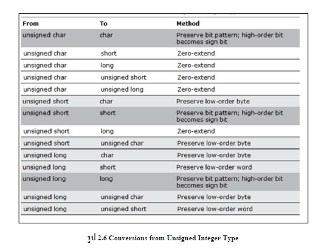

| การแปลงที่เกิดขึ้นระหว่าง signed และ unsigned integer ขนาดใดๆ และอาจส่งผลทำให้ เกิดการสูญหายของข้อมูลหรือการปัญหาการตีความของข้อมูลเมื่อค่านั้นไม่สามารถแทนที่ด้วยค่าชนิดใหม่ได้นั้นเองการแปลงค่าของชนิด unsigned integer ที่มีขนาดเล็ก ไปเป็น ค่าของชนิด unsigned integer ที่มีขนาดใหญ่จะต้องมีการระมัดระวังและมักจะเกิดการขยายขนาดของค่านั้น เมื่อ unsigned integer ที่มีขนาดใหญ่ ถูกแปลงไปเป็นค่าของ unsigned integer ที่มีขนาดเล็ก ซึ่งค่าที่มีขนาดใหญ่จะถูกตัดทอนและจะมีการเก็บรักษา low-order เอาไว้ เมื่อค่าของ unsigned integer ที่มีขนาดใหญ่ถูกแปลงไปเป็น signed integer ที่มีขนาดเล็ก ซึ่งค่านี้จะถูกตัดทอนและ high-order bit จะถูกเก็บค่าของ sign bit ไว้ ซึ่งทั้งสองกรณีนี้ข้อมูลก็อาจสูญหายไปถ้าค่านั้นไม่สามารถแทนในค่าใหม่ได้ เมื่อ unsigned integer ถูกแปลงไปเป็น ชนิดของ singed integer ( ตัวอย่าง การแปลง unsigned char ไปเป็น char ) bit pattern จะถูกเก็บรักษาเอาไว้ จากรูปจะแสดงการแปลงค่าชนิด unsigned integer โดยสีเทาแสดงถึงผลลัพธ์ที่เกิดจากการแปลงค่าทำให้เกิดข้อมูลสูญหายได้และสีเทาดำจะแสดงการแทนค่าที่ไม่ถูกต้อง | ||
|

|
||